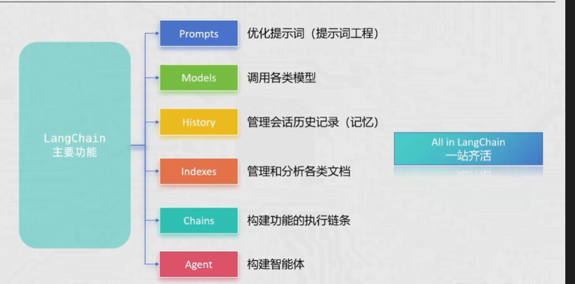
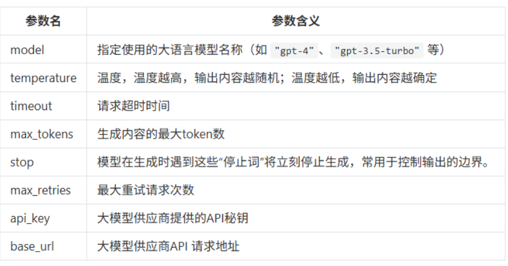
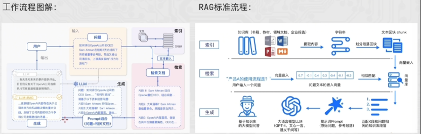

LangChain
01 前置准备
远程调用 LLM
大多数主流大模型（GPT、Claude、Gemini）通过 RESTful API 提供服务。目前行业基本统一使用 OpenAI SDK 标准。
| 参数 | 说明 | 示例 |
|---|---|---|
| Base URL | API 接口地址 | https://api.openai.com/v1 |
| API Key | 身份凭证（需保密） | sk-xxx... |
| Model ID | 模型版本 | gpt-4o, claude-3-5-sonnet |
环境变量的保护
推荐将敏感信息存入环境变量，通过 os.getenv() 读取：
from openai import OpenAI
import os
client = OpenAI(
# 从环境变量读取 API Key
api_key=os.getenv("OPENAI_API_KEY"),
base_url="https://dashscope.aliyuncs.com/compatible-mode/v1",
)
使用 .env 文件管理环境变量：
Ollama
Ollama 是目前最流行的本地大模型运行框架，适合数据敏感或无网络环境。
调用时只需修改 base_url，默认为 http://localhost:11434/v1：
from openai import OpenAI
import os
# 灵活切换：远程 API 或本地 Ollama
client = OpenAI(
api_key=os.getenv("LLM_API_KEY") or "ollama",
base_url=os.getenv("LLM_BASE_URL") # 动态加载
)
02 OpenAI 基础
OpenAI 是通用人工智能（AGI）研究的先驱，开发了 GPT 系列大语言模型。其 API 提供业界领先的文本生成、对话、嵌入（Embeddings）等能力。
核心概念：
| 概念 | 说明 |
|---|---|
| GPT | 基于 Transformer 的生成式预训练模型 |
| Token | 文本处理单元，计费单位（1 token ≈ 0.75 个英文单词） |
| Context Window | 模型最大上下文长度（GPT-4o 支持 128K tokens） |
| 多模态 | 支持文本、图像、音频等多种输入输出 |
OpenAI 调用 LLM 大模型
1、获取客户端对象
安装 openai 库并配置 API Key。推荐环境变量方式避免硬编码：
from openai import OpenAI
# 默认读取 OPENAI_API_KEY 环境变量
client = OpenAI(
api_key="your-api-key-here", # 或手动传入
base_url="https://api.openai.com/v1" # 代理或中转地址
)
2、调用模型
核心接口 chat.completions.create 采用对话式输入，messages 数组定义上下文角色：
response = client.chat.completions.create(
model="gpt-4o",
messages=[
{"role": "system", "content": "你是一个严谨的助手。"},
{"role": "user", "content": "解释一下量子纠缠。"}
],
temperature=0.7
)
参数说明：
- model: 指定模型版本（如
gpt-4o,gpt-3.5-turbo） - messages: 包含
role(system/user/assistant) 和content的消息列表 - temperature: 随机性控制（0 = 稳定，1 = 发散）
三种消息角色：
| 角色 | 作用 | 说明 |
|---|---|---|
| System | 设定 AI 身份 | 最高层级，定义行为准则和输出格式 |
| User | 用户输入 | 驱动对话，提出问题或任务 |
| Assistant | AI 回复 | 模型生成的回复，多轮对话需回传给 API |
3、处理结果
返回的 response 是结构化对象，关注首位候选回复：
# 获取回复文本
answer = response.choices[0].message.content
# 获取 Token 消耗统计
print(f"本次花费了 {response.usage.total_tokens} 个 Token")
响应结构详解：
{
"id": "chatcmpl-123",
"object": "chat.completion",
"created": 1677652288,
"model": "gpt-4o-2024-05-13",
"system_fingerprint": "fp_447092c6b1",
"choices": [
{
"index": 0,
"message": {
"role": "assistant",
"content": "你好！有什么我可以帮你的？",
"tool_calls": null
},
"logprobs": null,
"finish_reason": "stop"
}
],
"usage": {
"prompt_tokens": 9,
"completion_tokens": 12,
"total_tokens": 21
}
}
OpenAI 流式输出
流式传输适合实时显示生成内容。与普通响应的区别：message 变为 delta 字段。
流式响应结构：
{
"id": "chatcmpl-123",
"object": "chat.completion.chunk",
"created": 1694268190,
"model": "gpt-4o",
"choices": [
{
"index": 0,
"delta": {
"content": "核心"
},
"finish_reason": null
}
]
}
代码实现：
response = client.chat.completions.create(
model="gpt-4o",
messages=[{"role": "user", "content": "写一首短诗"}],
stream=True # 开启流式
)
for chunk in response:
content = chunk.choices[0].delta.content
if content:
print(content, end="", flush=True) # 打字机效果
OpenAI 历史消息
实现"记忆"的方法：将之前的 User 提问 和 Assistant 回答 按顺序放入 messages 列表。
from openai import OpenAI
import os
client = OpenAI(
base_url="https://dashscope.aliyuncs.com/compatible-mode/v1"
)
resp = client.chat.completions.create(
model="qwen-plus",
messages=[
{"role": "system", "content": "你是一个幽默的助教，不说废话。"},
{"role": "user", "content": "我叫小明。"},
{"role": "assistant", "content": "你好小明！记住了，我是你的助教。"},
{"role": "user", "content": "我叫什么名字？"} # 根据上下文回答"小明"
],
stream=True
)
for chunk in resp:
print(chunk.choices[0].delta.content, end="", flush=True)
03 提示词工程
概念
提示词工程是指通过精心设计、优化和精炼输入文本（Prompt），以引导大语言模型（LLM）生成准确、高质量且符合预期结果的过程。
其底层逻辑是利用模型在预训练阶段习得的模式匹配能力。好的提示词本质上是在海量参数空间中，为模型勾勒出一条通往正确答案的"概率路径"。
常用技巧
| 序号 | 技巧 | 说明 |
|---|---|---|
| 1 | 详细描述 | 提供具体、清晰的任务描述 |
| 2 | 角色设定 | 将 LLM 设定为特定角色（如教师、面试官） |
| 3 | 使用分隔符 | 用分隔符标明输入的不同部分 |
| 4 | 指定步骤 | 对复杂任务分步骤说明 |
| 5 | 提供示例 | Few-shot Learning，给出输入-输出示例 |
| 6 | 基于文档 | 辅助大模型问答，降低模型"幻觉" |
Zero-shot
概念：直接向模型下达指令，不提供任何示例。模型仅依靠其预训练阶段习得的通用知识和指令遵循能力来完成任务。
Few-shot
在正式指令之前，先给模型展示 1 到 5 个"输入-输出"对作为示范。这不仅定义了任务，更重要的是定义了输出的模式（Pattern）。
Prompt 设计：返回 JSON
import json
from openai import OpenAI
client = OpenAI(
base_url="https://dashscope.aliyuncs.com/compatible-mode/v1"
)
example_data = [
{
"input": "2025年第100期，开好红球 22 21 06 01 03 11 篮球 07，一等奖中奖为2注",
"output": {"期数": "2025100", "中奖号码": [1, 3, 6, 11, 21, 22, 7], "一等奖": "2注"}
},
{
"input": "2025101期，有3注1等奖，10注2等奖，开号篮球11，中奖红球3、5、7、11、12、16。",
"output": {"期数": "2025101", "中奖号码": [3, 5, 7, 11, 12, 16, 11], "一等奖": "3注"}
}
]
message = [
{"role": "system", "content": "你是一个彩票专家，需要按照下面的示例返回 JSON 字符串，不需要其他废话！"},
]
for v in example_data:
message.append({"role": "user", "content": v["input"]})
message.append({"role": "assistant", "content": json.dumps(v["output"], ensure_ascii=False)})
q = "第2025102期开奖结果已出。其中二等奖高达50注，一等奖仅中出1注！本期开出的蓝球为09，红球序列则是：08、12、15、20、22、31。"
message.append({"role": "user", "content": f"请按照示例返回 JSON: {q}"})
for x in message:
print(x)
resp = client.chat.completions.create(
model="qwen-plus",
messages=message,
stream=True
)
for chunk in resp:
print(chunk.choices[0].delta.content, end="", flush=True)
04 LangChain
LanLangChain 是一个开源框架，旨在让开发者能够轻松构建由大语言模型（LLM）驱动的应用程序。它的核心理念是将复杂的 LLM 操作抽象为一个个"链"（Chains），实现模块化的开发流程。它就是一套把大模型和外部世界连接起来的工具代码。
LangChain 主要由六部分组成，分别为：model、Memory、Retrieval、Chains、Agents、CallBacks。
LangChain 一定是未来的潮流！

LangChain 安装
打印 langchain 相关信息
import langchain
import langchain_community
import sys
print("langchainVersion: "+langchain.__version__)
print("langchain_communityVersion: "+langchain_community.__version__)
print("langchainfile:"+langchain.__file__)
LangChain Models
在 LangChain 框架中，Models 是整个生态的核心驱动力。LangChain 并不直接拥有模型，而是提供了一套标准的接口，让你能够轻松地在不同的模型供应商（如 OpenAI, Anthropic, Google, Hugging Face）之间切换。
LangChain 将模型主要划分为两大类：LLMs 和 Chat Models。
LLMs（大语言模型）
这类模型通常被称为"纯文本模型"。
- 输入/输出：接受一个 String（字符串），返回一个 String
- 特点：它们本质上是文本补全器（Text Completion）
- 适用场景：简单的文本生成、老版本的 GPT-3 模型
from langchain_openai import OpenAI
llm = OpenAI(model_name="gpt-3.5-turbo-instruct")
response = llm.invoke("向我解释什么是量子力学")
Chat Models（聊天模型）
这是目前主流的模型类型（如 GPT-4, Claude 3）。
- 输入/输出：接受一个 Messages 列表，返回一个 BaseMessage 对象
- 消息角色：
SystemMessage：设置 AI 的行为（例如："你是一个翻译助手"）HumanMessage：用户发送的内容AIMessage：模型返回的内容
模型的标准输入

以上的标准参数，也只是适用于部分的大语言模型，有些参数在特定模型中可能是无效的，这些标准化参数仅对 LangChain 官方提供集成包的模型（如 langchain-openai、langchain-anthropic）生效，在langchain-community包中的第三方模型，则不需要遵守这些标准化参数的规则。
模型的输出
在 LangChain 中，调用 chatModel 返回的对象通常是 AIMessage或者 AIMessageChunk 类。它将原始 API 返回的 JSON 进行了标准化封装，使其在不同模型（OpenAI, Claude, Qwen 等）之间保持一致。
AIMessage(
content="...", # 字符串内容
additional_kwargs={}, # 预留给特定模型的特殊参数
response_metadata={ # 详细运行信息
"model_name": "qwen-max",
"finish_reason": "stop",
"token_usage": {...}
},
id="...", # 追踪 ID
tool_calls=[], # 工具调用列表
usage_metadata={...} # (新版本) 规范化的 Token 统计
)
提取数据示例：
# 1. 获取回复文本
msg_text = res.content
# 2. 获取 Token 消耗（推荐使用新版通用字段 usage_metadata）
total_tokens = res.usage_metadata['total_tokens']
# 3. 判断是否为 AI 消息（在处理历史消息列表时很有用）
from langchain_core.messages import AIMessage
is_ai = isinstance(res, AIMessage)
模型创建方式总览
LangChain 提供了三种创建模型的方式，各有适用场景：
| 创建方式 | 适用版本 | 特点 | 适用场景 |
|---|---|---|---|
init_chat_model() |
1.0+ | 统一接口，自动识别 provider | 推荐。快速开发、频繁切换模型 |
| Provider 原生类 | 全版本 | 精细控制，访问专属参数 | 生产环境、需要高级配置 |
| OpenAI 兼容方式 | 全版本 | 第三方模型通用，配置灵活 | 使用非标准 provider 的模型 |
方式一：init_chat_model（1.0+ 推荐）
这是 LangChain 1.0 引入的统一创建接口，内置了常见 provider 的识别逻辑，大幅简化了多模型切换的代码。
智能推导（自动识别 provider）
当模型名称符合内置规则时，model_provider 可以省略：
from langchain.chat_models import init_chat_model
import os
# deepseek-chat → 自动识别为 deepseek provider
model = init_chat_model(
model="deepseek-chat",
api_key=os.getenv("DEEPSEEK_API_KEY"),
base_url="https://api.deepseek.com"
)
# gpt-4o → 自动识别为 openai provider
model = init_chat_model(
model="gpt-4o",
api_key=os.getenv("OPENAI_API_KEY")
)
# claude-3-5-sonnet → 自动识别为 anthropic provider
model = init_chat_model(
model="claude-3-5-sonnet-20241022",
api_key=os.getenv("ANTHROPIC_API_KEY")
)
显式指定 provider（通用模型或自定义）
当使用非标准模型名，或需要通过 OpenAI 兼容接口调用其他模型时，需手动指定 model_provider：
from langchain.chat_models import init_chat_model
import os
# 通过 OpenAI 接口调用阿里通义（百炼平台）
model = init_chat_model(
model="qwen-max", # 模型名
model_provider="openai", # 使用 OpenAI SDK 调用
api_key=os.getenv("DASHSCOPE_API_KEY"),
base_url="https://dashscope.aliyuncs.com/compatible-mode/v1"
)
# 通过 OpenAI 接口调用本地 Ollama
model = init_chat_model(
model="llama3.1",
model_provider="openai",
api_key="ollama", # Ollama 不验证 key，随意填写
base_url="http://localhost:11434/v1"
)
常用参数说明
| 参数 | 类型 | 说明 |
|---|---|---|
model |
str | 模型名称（如 "gpt-4o", "qwen-max"） |
model_provider |
str | 可选。provider 名称（如 "openai", "anthropic", "deepseek"） |
api_key |
str | API 密钥 |
base_url |
str | 可选。自定义 API 端点（代理或第三方平台） |
temperature |
float | 随机性（0-2，默认 0.7） |
max_tokens |
int | 最大生成 token 数 |
方式二：Provider 原生创建（精细控制）
直接使用各 provider 提供的专用类，可以获得最完整的参数支持和类型提示。
OpenAI 官方
from langchain_openai import ChatOpenAI
model = ChatOpenAI(
model="gpt-4o",
api_key=os.getenv("OPENAI_API_KEY"),
temperature=0.7,
max_tokens=4096
)
阿里通义（原生方式）
from langchain_community.chat_models import ChatTongyi
model = ChatTongyi(
model='glm-4.7',
api_key=os.getenv("dashscope_api_key"),
streaming=True
)
Anthropic Claude
from langchain_anthropic import ChatAnthropic
model = ChatAnthropic(
model="claude-3-5-sonnet-20241022",
api_key=os.getenv("ANTHROPIC_API_KEY")
)
DeepSeek
from langchain_deepseek import ChatDeepSeek
from dotenv import load_dotenv
import os
load_dotenv()
model = ChatDeepSeek(
model="deepseek-chat",
api_key=os.getenv("DEEP_SEEK_API_KEY"),
temperature=0.4,
timeout=None,
)
质谱
streaming_chat = ChatZhipuAI(
model="glm-4.7",
api_key= os.getenv("zhipu_api_key"),
streaming=True
)
Ollama
from langchain_ollama import ChatOllama
model = ChatOllama(
model="qwen3.5:9b",
base_uro="http://ocalhost:11434"
)
for chunk in model.stream("你是谁"):
print(chunk.content, end="", flush=True)
| 特性 | init_chat_model | Provider 原生 |
|---|---|---|
| 代码简洁度 | ✅ 高 | 中 |
| 多模型切换 | ✅ 方便 | 需修改 import 和类名 |
| 专属参数 | 通用参数 | ✅ 完整支持 |
| 类型提示 | 通用 | ✅ 精确 |
| IDE 补全 | 通用 | ✅ 完整 |
方式三：OpenAI 兼容方式（第三方通用）
核心原理：OpenAI SDK 已成为行业标准，绝大多数第三方模型（DeepSeek、通义、智谱、本地 Ollama 等）都提供了兼容 OpenAI 的接口。
适用场景：
- 使用没有专用 LangChain 集成包的模型
- 通过代理/中转平台调用模型
- 本地部署的模型（Ollama、vLLM 等）
配置要点：
- 使用
ChatOpenAI类（或init_chat_model+model_provider="openai"） - 设置
base_url为第三方平台的 OpenAI 兼容端点 - 设置
api_key为第三方平台的密钥
示例：通过 OpenAI 兼容接口调用 DeepSeek
from langchain_openai import ChatOpenAI
import os
model = ChatOpenAI(
model="deepseek-chat",
api_key=os.getenv("DEEPSEEK_API_KEY"),
base_url="https://api.deepseek.com/v1" # OpenAI 兼容端点
)
# 使用方式完全相同
response = model.invoke("你好")
print(response.content)
示例：通过 OpenAI 兼容接口调用通义（与原生方式对比）
# 方式 A：原生 Provider 方式
from langchain_community.chat_models import ChatTongyi
model_native = ChatTongyi(model="qwen-max")
# 方式 B：OpenAI 兼容方式（更灵活，可自定义 base_url）
from langchain_openai import ChatOpenAI
model_compatible = ChatOpenAI(
model="qwen-max",
api_key=os.getenv("DASHSCOPE_API_KEY"),
base_url="https://dashscope.aliyuncs.com/compatible-mode/v1"
)
# 两者调用方式完全一致
主流平台 OpenAI 兼容端点
| 平台 | OpenAI 兼容端点 |
|---|---|
| DeepSeek | https://api.deepseek.com/v1 |
| 阿里通义（百炼） | https://dashscope.aliyuncs.com/compatible-mode/v1 |
| 智谱 AI | https://open.bigmodel.cn/api/paas/v4 |
| 本地 Ollama | http://localhost:11434/v1 |
| vLLM 部署 | http://localhost:8000/v1 |
最佳实践：项目初期使用 init_chat_model 快速迭代，生产环境根据需要逐步迁移到 Provider 原生方式以获得更好的类型安全。
LangChain 模型调用的方式
在 LangChain 中，调用模型非常简洁统一。无论底层是 OpenAI、通义还是其他模型，都使用相同的接口。
调用方式概览
LangChain 为所有 Chat Model 提供了统一的调用接口：
| 方法 | 返回类型 | 适用场景 | 特点 |
|---|---|---|---|
invoke() |
AIMessage |
单次请求 | 最常用，同步阻塞 |
stream() |
Iterator[AIMessageChunk] |
实时输出 | 打字机效果，逐字返回 |
batch() |
List[AIMessage] |
批量处理 | 内部并行，提高吞吐 |
ainvoke() |
AIMessage |
异步单次 | 非阻塞，需 await |
astream() |
AsyncIterator[AIMessageChunk] |
异步流式 | 返回异步生成器，无需 await |
注意点 ⭐⭐⭐
ainvoke() - 返回协程对象，所以需要通过 await 来挂起当前协程并执行 ainvoke 返回的协程对象
astream() - 返回异步迭代器，所以我们不需要在 astream() 前去写 await，对于异常生成器，我们的处理方式是 async for
invoke() 单次调用（最常用）
# 元组形式：(role, content)
messages = [
("system", "你是一个幽默的助手"),
("human", "讲个程序员笑话")
]
response = model.invoke(messages)
print(response.content)
stream() 流式调用（打字机效果）
流式输出让大模型像打字机一样逐字显示，提升用户体验：
# 流式输出
for chunk in model.stream("请写一篇关于人工智能的短文"):
print(chunk.content, end="", flush=True)
# chunk 是 AIMessageChunk 对象，只包含增量内容
完整示例（带前缀显示）：
import time
chunks = []
for chunk in model.stream("用Python写个快速排序"):
content = chunk.content
if content:
chunks.append(content)
print(content, end="", flush=True)
time.sleep(0.05) # 模拟打字效果
# 最终完整内容
full_response = "".join(chunks)
batch() 批量调用（提高效率）
批量处理多个输入，内部自动并行：
questions = [
"Python 的特点是什么？",
"Java 和 Python 的区别？",
"什么是装饰器？"
]
# 批量调用，返回列表
responses = model.batch(questions)
for i, resp in enumerate(responses):
print(f"问题 {i+1}: {questions[i]}")
print(f"回答: {resp.content[:100]}...\n")
控制并发数：
异步调用
适用于 Web 服务、高并发应用：
import asyncio
from langchain_openai import ChatOpenAI
model = ChatOpenAI(model="gpt-4o")
async def main():
# 异步单次调用
response = await model.ainvoke("你好")
print(response.content)
# 异步流式调用
print("\n流式输出：")
async for chunk in model.astream("讲个故事"):
print(chunk.content, end="", flush=True)
# 运行
asyncio.run(main())
FastAPI 集成示例：
from fastapi import FastAPI
from langchain_openai import ChatOpenAI
app = FastAPI()
model = ChatOpenAI(model="gpt-4o")
@app.post("/chat")
async def chat(message: str):
response = await model.ainvoke(message)
return {"response": response.content}
@app.post("/chat/stream")
async def chat_stream(message: str):
async def generate():
async for chunk in model.astream(message):
yield chunk.content
return generate()
LangChain ChatModels
在 LangChain 中，ChatModels 是 LLM 的进化版。与传统的 LLMs（纯文本进、纯文本出）不同，ChatModels 是为"对话"而生的。它们理解 消息（Messages） 的概念，并能够区分对话中不同的角色。
1、核心模型对象：消息类型
| 消息类名 | 角色说明 | 典型用途 |
|---|---|---|
SystemMessage |
系统预设 | 设定 AI 的人设、语气、遵守的规矩（例如："你是一个毒舌的影评人"） |
HumanMessage |
用户输入 | 用户发出的提问或指令 |
AIMessage |
AI 回复 | 模型生成的响应。在多轮对话中，需要把之前的 AIMessage 传回给模型作为记忆 |
FunctionMessage / ToolMessage |
插件/工具返回 | 当模型调用外部工具（如搜索、计算器）后，将结果返回给模型时使用 |
2、基本调用演示
使用 ChatModels 时，通常传入一个消息列表：
from langchain_community.chat_models import ChatTongyi
from langchain_core.messages import HumanMessage
# 创建模型实例
llm = ChatTongyi(model="qwen-max")
# 创建消息实例
message = [
HumanMessage(content="请将下面这句话翻译成英文：中国是一个伟大的国家")
]
res = llm.stream(input=message)
for chunk in res:
print(chunk.content, end="", flush=True)
3、message 的简写形式（1.0+）
# 创建模型实例
llm = ChatTongyi(model="qwen-max")
# 创建消息实例
message = [
("system", "你是一个幽默的情感专家"),
("human", "如果明知道一个女孩不喜欢我，我还天天想着她，你怎么评价")
]
res = llm.stream(input=message)
for chunk in res:
print(chunk.content, end="", flush=True)
LangChain 嵌入模型
在 LangChain 中，嵌入模型（Embedding Models） 是连接"自然语言"与"机器计算"的桥梁。它们将文本转换为一串高维向量（通常是数百或上千维的浮点数数组）。
LangChain 提供了 Embeddings 类作为统一接口。无论用 OpenAI 还是本地的 Hugging Face 模型，代码结构几乎一致：
embed_documents：用于向量化多条文本（通常是存入数据库前的原始文档）embed_query：用于向量化用户的问题（单条文本）
A. OpenAI Embeddings
from langchain_openai import OpenAIEmbeddings
embeddings_model = OpenAIEmbeddings(model="text-embedding-3-small")
embeddings = embeddings_model.embed_query("什么是人工智能？")
print(len(embeddings)) # 输出维度大小，如 1536
B. Hugging Face Embeddings
from langchain_huggingface import HuggingFaceEmbeddings
# 加载本地模型（首次运行会自动下载）
model_name = "sentence-transformers/all-mpnet-base-v2"
hf_embeddings = HuggingFaceEmbeddings(model_name=model_name)
res = hf_embeddings.embed_query("LangChain 很强大")
C. 阿里通义千问 Embeddings
from langchain_community.embeddings import DashScopeEmbeddings
embeddings = DashScopeEmbeddings(model="text-embedding-v1")
LangChain Prompt
在 LangChain 中，Prompt（提示词）不再仅仅是一段硬编码的字符串，而是被抽象为 Prompt Templates（提示词模板）。这种抽象让你可以像写代码函数一样，定义可重复使用的逻辑，并动态地注入变量。
基础模板：PromptTemplate
PromptTemplate 是最通用的文本模板形式，适用于纯文本模型（LLM）。它的核心作用是：定义带变量的模板字符串，并在运行时动态填充。
两种创建方式对比：
| 方式 | 语法 | 特点 |
|---|---|---|
from_template() |
PromptTemplate.from_template(template) |
自动提取 {变量}，简洁推荐 |
| 构造函数 | PromptTemplate(template=..., input_variables=...) |
显式声明，可控性高 |
方式一：from_template()（推荐）
from langchain_core.prompts import PromptTemplate
# 自动识别 {topic} 和 {level} 为变量
pt = PromptTemplate.from_template(
"请用{level}的语言解释什么是{topic}"
)
# 填充变量
result = pt.format(topic="量子计算", level="通俗")
print(result)
# 输出: 请用通俗的语言解释什么是量子计算
方式二：构造函数
from langchain_core.prompts import PromptTemplate
# 显式声明输入变量
pt = PromptTemplate(
template="请用{level}的语言解释什么是{topic}",
input_variables=["topic", "level"] # 必须列出所有变量
)
result = pt.format(topic="神经网络", level="专业")
partial_variables：预设固定变量
当某些变量在创建时就已确定，无需每次传入，可以使用 partial_variables 预设：
import time
from langchain_core.prompts import PromptTemplate
# 创建模板时预设时间变量
current_time = time.strftime("%Y-%m-%d %H:%M:%S", time.localtime())
pt = PromptTemplate.from_template(
"当前时间：{time}\n你是{role}，请解释{concept}",
partial_variables={"time": current_time} # 预设时间
)
# 调用时只需传入剩余变量
result = pt.format(role="物理老师", concept="黑洞")
partial()：动态绑定变量
除了创建时预设，还可以使用 .partial() 方法在已有模板基础上动态绑定变量，生成新模板：
from langchain_core.prompts import PromptTemplate
# 基础模板
base_template = PromptTemplate.from_template(
"你是{role}，请用{style}的风格解释{topic}"
)
# 动态绑定 role，生成新模板
teacher_template = base_template.partial(role="高中老师")
# 只需传入剩余变量
result = teacher_template.format(style="生动有趣", topic="光合作用")
# 输出: 你是高中老师，请用生动有趣的风格解释光合作用
# 也可以链式绑定
final_template = base_template.partial(role="教授").partial(style="严谨学术")
result = final_template.format(topic="广义相对论")
格式化输出方法：
| 方法 | 返回值 | 用途 |
|---|---|---|
.format() |
str |
获取纯字符串 |
.format_prompt() |
StringPromptValue |
链式调用（LCEL） |
.invoke() |
StringPromptValue |
Runnable 接口标准 |
from langchain_core.prompts import PromptTemplate
pt = PromptTemplate.from_template("解释{concept}")
# 获取字符串
text = pt.format(concept="区块链")
# 获取 PromptValue 对象（用于 chain）
prompt_value = pt.invoke({"concept": "人工智能"})
# prompt_value.to_string() 获取字符串
聊天模板：ChatPromptTemplate
针对 ChatModels，我们需要构造包含角色的消息列表。这是目前最常用的通用方式。在构造提示词模板的时候，我们也可以通过两种方式来构造，同时，可以传入的构造参数主要有三种，如下：
from langchain_core.prompts import ChatPromptTemplate
prompt = ChatPromptTemplate.from_messages([
("system", "你是一个翻译助手，负责将{input_language}翻译成{output_language}。"),
("human", "{text}"),
])
# 格式化
formatted_messages = prompt.format_messages(
input_language="中文",
output_language="法语",
text="我爱学习"
)
在 LangChain 中，MessagesPlaceholder 是处理动态对话历史的核心组件。它就像是在提示词模板中挖了一个"插槽"，专门用来放置数量不确定的聊天记录。
from langchain_core.prompts import ChatPromptTemplate, MessagesPlaceholder
from langchain_core.messages import HumanMessage, AIMessage
prompt = ChatPromptTemplate.from_messages([
("system", "你是一个得力的助手。"),
# "history" 是占位符变量名，用于接收消息列表
MessagesPlaceholder(variable_name="history"),
("human", "{input}"),
])
# 模拟历史记录
history_msgs = [
HumanMessage(content="我叫小明"),
AIMessage(content="你好小明！很高兴认识你。")
]
# 填充模板（不常用）
final_messages = prompt.format_messages(
history=history_msgs,
input="我刚才说我叫什么？"
)
# 常用方式
final_messages = prompt.invoke({"input": "你叫什么名字？", "history": history_msgs})
少样本提示：Few-Shot Prompts
from langchain_core.prompts import FewShotPromptTemplate
examples = [
{"input": "开心", "output": "高兴、愉悦、欣喜"},
{"input": "难过", "output": "悲伤、沮丧、消沉"}
]
example_prompt = PromptTemplate.from_template("输入: {input}\n输出: {output}")
few_shot_prompt = FewShotPromptTemplate(
examples=examples,
example_prompt=example_prompt,
suffix="输入: {word}\n输出:", # 真正提问的部分
input_variables=["word"]
)
prompt = few_shot_prompt.invoke({"word": "平淡"}).to_string()
format 和 invoke 的区别
简单来说，format 和 invoke 的区别在于返回值的类型以及它们在 LangChain 表达式语言（LCEL） 中的角色。
| 特性 | .format() | .invoke() |
|---|---|---|
| 返回类型 | String（纯字符串） | PromptValue（LangChain 对象） |
| 主要用途 | 快速查看填充后的文本，方便打印调试 | 作为 Runnable 接口的一部分，用于链式调用 |
| 设计逻辑 | 传统的 Python 字符串格式化增强版 | 为了兼容各种模型（LLM/ChatModel）而设计的中间格式 |
| 输出示例 | "请解答问题..." |
StringPromptValue(text="...") |
.format()：回归原始字符串，当调用 .format() 时，LangChain 会直接完成变量替换，并返回一个标准的 Python 字符串。
.invoke()：LangChain Runnable 协议的标准方法。当写 chain = prompt | llm 时，背后调用的就是 invoke。如果下游是 LLM（通义千问 Tongyi），它会自动变身为 String。如果下游是 ChatModel（ChatTongyi），它会自动变身为 Message List（包含 System/Human 角色）。
# 假设变量为 {"input": "男"}
# 1. 使用 format -> 得到纯文本
raw_text = few_shot_prompt.format(input="男")
print(type(raw_text)) # <class 'str'>
print(raw_text) # 请按照...input:男, output:
# 2. 使用 invoke -> 得到封装对象
prompt_value = few_shot_prompt.invoke({"input": "男"})
print(type(prompt_value)) # <class 'langchain_core.prompt_values.StringPromptValue'>
# 如果你想看对象里的文本，得手动转：
print(prompt_value.to_string())
外部加载提示词
将提示词存储在外部文件，便于管理和复用。
从文件加载
from langchain_core.prompts import PromptTemplate
from langchain_core.prompts import load_prompt
# 从文本文件加载
with open("prompts/explain.txt", "r", encoding="utf-8") as f:
prompt = PromptTemplate.from_template(f.read())
# yaml 或者 json
prompt_template = load_prompt("./prompt.yaml", encoding="utf-8")
从 LangChain Hub 加载
推荐目录结构
project/
├── prompts/
│ ├── explain.txt # 纯文本提示词
│ ├── translate.json # JSON 格式
│ └── chat.yaml # YAML 格式
└── main.py
LangChain OutputParser
在 LangChain 中，OutputParser（输出解析器） 是整个链条的最后一环。它负责将模型输出的非结构化文本（AIMessage）转换为应用程序可以处理的结构化数据（如字符串、JSON 或 Python 对象）。
核心作用
大模型的原始回复往往带有元数据、Token 消耗等信息，或者仅仅是一段松散的文本。解析器的作用是：
- 提取内容：从
AIMessage中剥离出实际的文本 - 转换格式：将文本解析为更易用的数据结构（如 JSON、列表、甚至是 Pydantic 模型）
- 格式指引：许多解析器还能通过
get_format_instructions()方法，自动生成一段 Prompt 告诉模型应该输出什么样格式的数据
常用解析器
| 解析器类型 | 输出结果类型 | 适用场景 |
|---|---|---|
StrOutputParser |
str（字符串） |
最常用。只需获取回复正文 |
JsonOutputParser |
dict（字典） |
需要模型返回结构化参数或数据对象 |
CommaSeparatedListOutputParser |
list（列表） |
将逗号分隔的文本转换为 Python 列表 |
PydanticOutputParser |
Pydantic Model |
最强格式约束。确保输出完全符合定义的类结构 |
JsonOutputParser
PydanticOutputParser 与这个类似，就是定义结构化输出的格式（pydantic对象），然后通过get_format_instructions 获得结构化输出的指令，动态注入到到提示词中即可。
import os
from dotenv import load_dotenv
from langchain.chat_models import init_chat_model
from langchain_core.output_parsers import JsonOutputParser
from langchain_core.prompts import ChatPromptTemplate
from pydantic import BaseModel, Field
load_dotenv(encoding="utf-8")
class Person(BaseModel):
name: str=Field(..., description="姓名")
age: int=Field(..., description="年龄")
event: str=Field(..., description="事件")
parser = JsonOutputParser(pydantic_object=Person)
prompt_template = ChatPromptTemplate.from_messages([
('system','你是一个新闻助手，请按照指定格式返回一个人的介绍：{format_instructions}'),
('human', '请介绍{input}'),
])
model = init_chat_model(
model="glm-5",
api_key=os.getenv("dashscope_api_key"),
model_provider='openai',
base_url=os.getenv("BASE_URL"),
streaming=True
)
chain = prompt_template | model | parser
resp = chain.invoke(
input={
"input": "雷军",
'format_instructions':parser.get_format_instructions()
}
)
print(resp)
TypedDict
TypedDict 有点像是低级版的 pydantic，反正这种方式也能用吧。
from typing import TypedDict, Annotated
import os
from dotenv import load_dotenv
from langchain_core.prompts import ChatPromptTemplate
from langchain_community.chat_models.tongyi import ChatTongyi
load_dotenv(encoding="utf-8")
# 1. 定义 TypedDict 作为输出 schemaclass Person(TypedDict, total=False):
name: Annotated[str, '名称']
age: Annotated[int, '最大值不能超过18']
# 2. 创建模型
model = ChatTongyi(
model='glm-5',
api_key=os.getenv("dashscope_api_key"),
)
# 3. 绑定结构化输出 schema（传入类，不是实例！）
structured_model = model.with_structured_output(Person)
# 4. 调用模型获取结构化输出
result = structured_model.invoke("请介绍一个叫张三的人，年龄25岁")
print(result)
# 输出: {'name': '张三', 'age': 25} (类型为 Person)
LangChain Runnable
官方文档原话：Runnable objects can be composed together to create chains in a declarative way.
在 LangChain 中，Runnable 是一套标准化的协议（本质是一个抽象类），它为所有的组件（模型、提示词、解析器、甚至是你自定义的函数）提供了统一的调用方式。
1、设计理念
无论底层逻辑多么复杂，所有的 Runnable 对象都必须实现几个核心方法。这种"接口一致性"是 LCEL 能实现 | 串联的基础：只要两个组件都实现了 Runnable 接口，且输入输出类型匹配，它们就能无缝对接。
2、四大核心调用方法
| 方法名称 | 执行模式 | 适用场景 |
|---|---|---|
invoke() |
同步执行 | 单次请求，最基础的调用方式 |
ainvoke() |
异步执行 | 高并发场景，通过 await 提高程序性能 |
batch() |
批量执行 | 同时处理多个输入，内部自动实现并行加速 |
stream() |
流式执行 | 实时返回数据片段，常用于构建"打字机"效果 |
3、输入与输出类型
-
Prompt：接收dict（变量），输出PromptValue -
ChatModel：接收PromptValue（或消息列表），输出AIMessage -
OutputParser：接收AIMessage，输出特定格式（字符串、JSON 等）
利用 RunnableLambda，你可以将任何普通的 Python 函数包装成 Runnable 接口，使其能够参与到管道符 | 的串联中。
4、进阶辅助组件
-
RunnablePassthrough：透传组件。用于将原始输入不做修改地传递给下一级，常用于在 RAG 中保留用户问题。 -
RunnableParallel：并行组件。同时运行多个 Runnable，并将结果合并为一个字典输出。 -
RunnableConfig：配置对象。用于在运行期间动态传递参数（如callbacks,tags,configurable选项）。
Langchain Chain
在 LangChain 中，Chain（链） 是其最核心的设计模式。它通过 LCEL（LangChain Expression Language） 表达式，将独立的对象（如提示词、模型、输出解析器）像乐高积木一样串联起来。
官方文档原话：Any chain constructed this way will automatically have sync, async, batch, and streaming support.
管道符 |
LangChain 借鉴了 Unix 的管道哲学。符号 | 的左侧输出会自动作为右侧的输入。
# 最经典的链式结构
chain = prompt | model | output_parser
# 示例：
chain = prompt_template | llm
res = chain.stream({"history": history})
顺序链
最基础的链形式，使用 | 将多个组件顺序连接，前一个的输出作为后一个的输入。
from langchain_core.prompts import ChatPromptTemplate
from langchain_core.output_parsers import StrOutputParser
# 定义组件
prompt = ChatPromptTemplate.from_template("告诉我关于{topic}的三个知识点")
model = init_chat_model("openai:gpt-4o-mini")
parser = StrOutputParser()
# 顺序链：prompt → model → parser
chain = prompt | model | parser
result = chain.invoke({"topic": "Python"})
分支链
使用 RunnableBranch 根据条件选择不同的执行路径。下面这个例子不太好，但是意思一下就行了。
model = init_chat_model(
model='qwen3.5-flash',
model_provider='openai',
api_key=os.getenv("DASHSCOPE_API_KEY"),
base_url=os.getenv('BASE_URL')
)
prompt = ChatPromptTemplate.from_messages(
[
("system", "你是一个专门将中文翻译为{language}的翻译大师,请简短回答用户问题"),
("human", "请回答：{input}")
]
)
chain = prompt | model | StrOutputParser()
branch = RunnableBranch(
(lambda x: x["language"] == '英文', chain),
(lambda x: x["language"] == '日文', chain),
(lambda x: x["language"] == '德语', chain),
chain
)
async def call1():
resp = await branch.ainvoke(input={"language": "英文", "input": "请翻译：你好"})
print(resp)
async def call2():
resp = await branch.ainvoke(input={"language": "日文", "input": "请翻译：你好"})
print(resp)
async def call3():
resp = await branch.ainvoke(input={"language": "德语", "input": "请翻译：你好"})
print(resp)
async def main():
await asyncio.gather(call1(), call2(), call3())
if __name__ == '__main__':
asyncio.run(main())
串行链
chain 与 chain 之间也可以通过 | 搭建到一块。
model = init_chat_model(
model='qwen3.5-flash',
model_provider='openai',
api_key=os.getenv("DASHSCOPE_API_KEY"),
base_url=os.getenv('BASE_URL')
)
prompt1 = ChatPromptTemplate.from_template("你是一个{role}，请简要回答：{input}")
prompt2 = ChatPromptTemplate.from_template("请翻译为英文：{input}")
parse = StrOutputParser()
chain1 = prompt1 | model | parse
chain2 = prompt2 | model | parse
def format_input(input):
return {'input': input}
chain = chain1 | RunnableLambda(format_input) | chain2
# 流式输出
for chunk in chain.stream(input={"role": "翻译", "input": "请翻译：你好"}):
print(chunk, end="", flush=True)
适用场景：需要动态构建链时，RunnableSequence 更灵活。
并行链
使用 RunnableParallel 同时执行多个分支，常用于 RAG 中同时获取问题和检索结果。
prompt1 = ChatPromptTemplate.from_template("你是一个英语翻译专家，，请翻译：{input}")
prompt2 = ChatPromptTemplate.from_template("你是一个日语翻译专家，，请翻译：{input}")
prompt3 = ChatPromptTemplate.from_template("你是一个德语翻译专家，，请翻译：{input}")
parser = StrOutputParser()
# 第一种写法：RunnableParallel 构造方式
chain = RunnableParallel(
{
"英文": prompt1 | model | parser,
"日文": prompt2 | model | parser,
"德语": prompt3 | model | parser,
}
)
# 第二种写法：直接写成字典
chain = {
"英文": prompt1 | model | parser,
"日文": prompt2 | model | parser,
"德语": prompt3 | model | parser,
}
# 第三种写法：传关键字参数
chain = RunnableParallel(
en=prompt1 | model | parser,
ja=prompt2 | model | parser,
de=prompt3 | model | parser
)
# 返回的是一个字典
resp = chain.invoke({"input": "请翻译：你好"})
for key, value in resp.items():
print(key, value)
RunnablePassthrough 详解：
| 用法 | 说明 |
|---|---|
RunnablePassthrough() |
原样传递输入 |
RunnablePassthrough.assign(a=lambda x: x["b"]) |
添加新字段并保留原字段 |
# RunnablePassthrough.assign 示例
chain = RunnablePassthrough.assign(
uppercase=lambda x: x["text"].upper(),
length=lambda x: len(x["text"])
)
chain.invoke({"text": "hello"})
# 输出：{"text": "hello", "uppercase": "HELLO", "length": 5}
函数链
使用 RunnableLambda 将自定义函数嵌入链中，处理业务逻辑。
from langchain_core.runnables import RunnableLambda
# 定义自定义函数
def parse_user_input(data: dict) -> dict:
"""解析用户输入，添加时间戳"""
return {
"question": data["question"],
"timestamp": datetime.now().isoformat(),
"user_id": data.get("user_id", "anonymous")
}
def format_output(response: str) -> dict:
"""格式化输出"""
return {"answer": response, "formatted": True}
# 自动转换：函数在 | 中自动转为 RunnableLambda
chain = (
parse_user_input # 自动包装
| prompt
| model
| StrOutputParser()
| format_output # 自动包装
)
# 等价于显式写法
chain = (
RunnableLambda(parse_user_input)
| prompt
| model
| StrOutputParser()
| RunnableLambda(format_output)
)
常用自定义函数场景：
# 场景1：数据预处理
def preprocess(query: str) -> dict:
return {"question": query.strip().lower()}
# 场景2：调用外部 API
def fetch_weather(data: dict) -> dict:
city = data["city"]
weather = requests.get(f"/api/weather?city={city}").json()
return {**data, "weather": weather}
# 场景3：数据库查询
def query_database(data: dict) -> dict:
user = db.query(User).filter_by(id=data["user_id"]).first()
return {**data, "user_info": user}
# 组合使用
chain = (
preprocess
| {"user_info": RunnableLambda(query_database)}
| prompt
| model
| StrOutputParser()
)
链类型对比：
| 链类型 | 核心组件 | 执行方式 | 典型场景 |
|---|---|---|---|
| 顺序链 | \| 连接 |
串行 | prompt → model → parser |
| 分支链 | RunnableBranch |
条件路由 | 多专家系统、意图识别 |
| 串行链 | RunnableSequence |
串行 | 动态构建链 |
| 并行链 | RunnableParallel / {} |
并行 | RAG 检索 + 问题传递 |
| 函数链 | RunnableLambda |
串行 | 数据预处理、API 调用 |
LangChain Memory
在 LangChain 中，Memory（记忆） 模块负责在对话过程中存储和检索数据。由于大模型本身是"无状态"的（它不记得上一秒发生了什么），Memory 的存在让模型能够拥有连贯的上下文能力。
BaseChatMessageHistory
BaseChatMessageHistory 是存储历史消息的抽象基类，定义了消息存储的标准接口。它不直接实例化，而是通过子类实现具体的存储后端。
抽象接口
from langchain_core.chat_history import BaseChatMessageHistory
from langchain_core.messages import BaseMessage
class BaseChatMessageHistory:
"""消息历史存储的抽象接口"""
@property
def messages(self) -> list[BaseMessage]:
"""获取所有消息"""
raise NotImplementedError
def add_message(self, message: BaseMessage) -> None:
"""添加一条消息"""
raise NotImplementedError
def clear(self) -> None:
"""清空历史"""
raise NotImplementedError
常用子类
具体可参考：官方文档
| 子类 | 存储位置 | 持久化 | 适用场景 |
|---|---|---|---|
InMemoryChatMessageHistory |
内存 | ❌ 进程结束丢失 | 测试、Demo、单次会话 |
FileChatMessageHistory |
本地 JSON 文件 | ✅ | 单机应用、开发调试 |
RedisChatMessageHistory |
Redis | ✅ | 生产环境、多实例部署 |
SQLChatMessageHistory |
SQL 数据库 | ✅ | 企业级应用 |
MongoDBChatMessageHistory |
MongoDB | ✅ | 文档型存储需求 |
InMemoryChatMessageHistory：内存存储，最简单但不持久化。适合测试和短期会话。FileChatMessageHistory：持久化到本地 JSON 文件，适合单机应用。RedisChatMessageHistory：生产级方案，支持分布式部署和多实例共享。
InMemoryChatMessageHistory 示例
def get_history(session_id: str) -> BaseChatMessageHistory:
if session_id not in store:
store[session_id] = InMemoryChatMessageHistory()
return store[session_id]
RedisChatMessageHistory 示例
store = {}
def get_history(session_id: str) -> RedisChatMessageHistory:
if session_id not in store:
store[session_id] = RedisChatMessageHistory(
session_id=session_id,
url=os.getenv("REDIS_URL"),
key_prefix="langchain:message:history",
ttl=3600
)
return store[session_id]
FileChatMessageHistory 示例
def get_history(session_id: str) -> RedisChatMessageHistory:
if session_id not in store:
os.makedirs("./history", exist_ok=True)
store[session_id] = FileChatMessageHistory(
file_path=f"./history/{session_id}.json",
)
return store[session_id]
RunnableWithMessageHistory
在早期的 LangChain 中，Memory 是直接集成在 Chain 对象里的。但在现代的 LCEL 语法中，官方更推荐使用 RunnableWithMessageHistory 来手动管理。
这 b 官方文档，还藏着，是吧，我找半天 ：RunnableWithMessageHistory 示例
from langchain_core.runnables.history import RunnableWithMessageHistory
from langchain_community.chat_message_histories import ChatMessageHistory
store = {}
def get_history(session_id):
if session_id not in store:
store[session_id] = ChatMessageHistory()
return store[session_id]
prompt = ChatPromptTemplate.from_messages([
SystemMessage(content="你是一个聊天大师，你需要帮助我与女孩子聊天（你的视角是我！！而不是你，懂吗），我会提供你之前的聊天记录，不需要废话，只需要给出回答即可"),
MessagesPlaceholder("history"),
("human", "{input}")
])
basic_chain = prompt | llm | str_parser
chain = RunnableWithMessageHistory(
basic_chain, # 基础链
get_session_history=get_history,
input_messages_key="input",
history_messages_key="history"
)
config = {
"configurable": {
"session_id": "liutianba7"
}
}
Memory 长期会话存储
长期会话存储可以选择将历史消息存到文件中，不同的 session 对应不同的文件，我们需要继承 BaseChatMessageHistory，然后按照下面的示例完成代码即可实现长期对话存储！
其实无论选择文件，还是 MySQL，或者 Redis，逻辑都是一样的：继承 BaseChatMessageHistory 并实现 messages 属性和 add_messages 方法，可以将对话记录"落地"到磁盘。
import os
import json
from typing import Sequence
from langchain_core.chat_history import BaseChatMessageHistory
from langchain_core.messages import BaseMessage, messages_from_dict, message_to_dict
class FileMessageHistory(BaseChatMessageHistory):
def __init__(self, session_id, storage_path):
self.session_id = session_id
self.storage_path = storage_path
# 创建存储目录
self.file_path = os.path.join(self.storage_path, self.session_id)
# 确保文件夹存在
os.makedirs(os.path.dirname(self.storage_path), exist_ok=True)
def add_messages(self, messages: Sequence[BaseMessage]) -> None:
old = list(self.messages)
old.extend(messages)
with open(self.file_path, "w", encoding="utf-8") as f:
json.dump([message_to_dict(m) for m in old], f, ensure_ascii=False)
def clear(self) -> None:
with open(self.file_path, "w") as f:
json.dump([], f)
@property # 将方法变成属性，方便后续直接 .messages 获取消息
def messages(self) -> list[BaseMessage]:
try:
with open(
self.file_path,
"r",
encoding="utf-8",
) as f:
messages_data = json.load(f)
return messages_from_dict(messages_data)
except FileNotFoundError:
return []
LangChain Loaders
在 LangChain 的世界里，Document Loaders（文档加载器） 是数据处理的第一站。大模型（LLM）虽然聪明，但它默认是不认识你电脑里的 PDF、数据库里的表格或者某个网页的内容的。
Loaders 的使命就是：把各种格式的非结构化数据，"翻译"成 LangChain 统一标准的 Document 对象。
Document 对象
无论加载的是什么，Loaders 最终都会产出一个 Document 对象，它包含两个关键部分：
page_content：文本内容（字符串）metadata：元数据（字典，包含来源、页码、创建日期等）
常见的 Loaders 分类
根据数据源的不同，LangChain 提供了几百种内置加载器。以下是开发中最常碰到的：
文件加载器
| 格式 | 推荐加载器 | 特点 |
|---|---|---|
PyPDFLoader |
简单易用，支持按页拆分 | |
| Markdown | UnstructuredMarkdownLoader |
能够识别标题、列表等结构 |
| CSV | CSVLoader |
将每一行转化为一个独立的 Document |
| JSON | JSONLoader |
需要配合 jq 语法提取特定的字段 |
云端与网页：直接从互联网获取最新鲜的语料。
WebBaseLoader：抓取基础网页 HTMLUnstructuredURLLoader：自动处理网页中的各种复杂布局DirectoryLoader：非常强大，可以一次性扫描整个文件夹，并根据后缀名自动匹配加载器
CSV Loader
from langchain_community.document_loaders import CSVLoader
loader = CSVLoader(
file_path="data_1/stu.csv",
csv_args={
"delimiter": ",", # 分隔符
"quotechar": '"', # 告诉解析器识别双引号包围的内容为单个字段
"fieldnames": ["a", "b", "c"], # 指定字段名，注意需要在没有字段名时才需要
},
encoding="utf-8",
source_column="", # 指定元数据的来源
)
document = loader.lazy_load()
for d in document:
print(d.metadata["source"], "\n", d.page_content)
JSON Loader
在 LangChain 中，JSONLoader 是一个非常强大但初学者常感到头疼的工具。与处理纯文本的 TextLoader 不同，JSON 是结构化的，JSONLoader 的核心使命是：利用 jq 语法，从复杂的 JSON 树中精准切出你需要的文本块，并将其转化为 Document 对象。
安装依赖
jq 基础语法
| 表达式 | 功能 | 描述 |
|---|---|---|
. |
Identity | 输出整个 JSON，不作任何修改 |
.name |
Object Identifier | 获取键为 name 的值 |
.user.id |
Chained | 嵌套获取。先找 user，再找 id |
.key? |
Optional | 即使 key 不存在也不会报错（在 LangChain 批量处理时很有用） |
.[]（迭代器）：将数组里的每一个元素单独输出。这是JSONLoader最常用的语法，因为它能把数组里的每个对象变成一个独立的Document.[0]：获取数组的第一个元素.[1:3]：切片，获取索引 1 到 2 的元素
基础用法：提取所有文本
from langchain_community.document_loaders import JSONLoader
# 假设数据格式为：{"text": "这是内容"}
loader = JSONLoader(
file_path="./data.json",
jq_schema=".text", # 指向 JSON 中的键
text_content=False, # 抽取的是否是一个字符串，默认为 true
json_lines=True, # 是否是 JsonLines 文件（每一行都是 JSON 文件）
)
docs = loader.load()
进阶用法：处理对象列表（最常用场景）
示例数据 example.json：
loader = JSONLoader(
file_path="example.json",
jq_schema=".[]", # 遍历数组中的每一个对象
content_key="content", # 指定哪个字段作为 Document 的 page_content
)
docs = loader.load()
# 结果：docs[0].page_content 将会是 "第一条消息"
TextLoader
TextLoader 是 LangChain 最基础的文档加载器，用于将纯文本文件（.txt）加载为 Document 对象。
LangChain 1.x 后 TextLoader 在 langchain_community 包中。
from langchain_community.document_loaders import TextLoader
loader = TextLoader("file.txt", encoding="utf-8")
documents = loader.load()
print(documents[0].page_content) # 文本内容
print(documents[0].metadata) # 元数据
PyPDFLoader
PyPDFLoader 是 LangChain 用于加载 PDF 文件的文档加载器，将 PDF 每一页加载为独立的 Document 对象。
基础用法
from langchain_community.document_loaders import PyPDFLoader
loader = PyPDFLoader(
file_path="data_1/stu.pdf", # 待处理的 PDF 文件路径
mode="page", # 读取模式，可选 page（按页读取）或者 single（直接加载为一个 document）
# password="password", # 密码
)
LangChain TextSplitter
文本切分解决三个问题：Embedding 长度限制、检索精准度、LLM 上下文窗口。
切分器对比
| 切分器 | 切分依据 | 适用场景 | 特点 |
|---|---|---|---|
RecursiveCharacterTextSplitter |
字符递归 | 通用文本（推荐） | 按分隔符层级切分，保持语义 |
CharacterTextSplitter |
单一分隔符 | 简单文本 | 简单粗暴，可能切断语义 |
TokenTextSplitter |
Token 数 | 需精确控制 token | 匹配模型限制，更准确 |
MarkdownHeaderTextSplitter |
标题层级 | Markdown 文档 | 按标题切分，保留结构 |
PythonCodeTextSplitter |
类/函数 | Python 代码 | 保持代码完整性 |
RecursiveCharacterTextSplitter
最常用的切分器，递归尝试分隔符：先用大分隔符（段落），不行再用小的（句子），最后按字符。
from langchain_text_splitters import RecursiveCharacterTextSplitter
splitter = RecursiveCharacterTextSplitter(
chunk_size=500, # 每块最大字符数
chunk_overlap=50, # 重叠（保持上下文连贯）
separators=["\n\n", "\n", " ", ""], # 分隔符优先级
)
# 切分文本
chunks = splitter.split_text("长文本内容...")
# 切分 Document 对象
chunks = splitter.split_documents(docs)
| 参数 | 说明 | 推荐值 |
|---|---|---|
chunk_size |
每块最大字符数 | 500-1000（通用），200-400（精准检索） |
chunk_overlap |
块之间重叠 | chunk_size 的 10-20% |
separators |
分隔符优先级 | 默认值即可，中文可加 ["。", "！", "？"] |
Token 切分（精确控制）
按 token 计数，匹配模型限制：
from langchain_text_splitters import TokenTextSplitter
splitter = TokenTextSplitter(
encoding_name="cl100k_base", # GPT-4/3.5 的编码
chunk_size=100, # 每 100 token 一块
chunk_overlap=0
)
Markdown 切分（保留结构）
按标题层级切分，metadata 保留标题信息：
from langchain_text_splitters import MarkdownHeaderTextSplitter
splitter = MarkdownHeaderTextSplitter(
headers_to_split_on=[("#", "h1"), ("##", "h2"), ("###", "h3")]
)
chunks = splitter.split_text(md_content)
# 结果示例：
# chunk.metadata = {"h1": "第一章", "h2": "简介"}
最佳实践
| 场景 | chunk_size | chunk_overlap | 切分器 |
|---|---|---|---|
| 通用 RAG | 500-1000 | 50-100 | Recursive |
| 精准问答 | 200-400 | 20-50 | Recursive |
| 长文档摘要 | 1000-2000 | 100-200 | Recursive |
| Markdown 文档 | 按标题 | 0 | MarkdownHeader |
| 代码文件 | 按函数 | 0 | CodeSplitter |
调优建议：
- chunk 太大 → 检索噪声多，答案不精准
- chunk 太小 → 上下文断裂，语义不完整
- overlap 太小 → 边界信息丢失
LangChain Vector Stores
基本概念
Vector Stores 是 LangChain 的向量存储模块，用于存储和检索文本的向量嵌入。
向量是一个有大小和方向的量。在计算机科学中，向量通常表示为一个有序的数值数组：
# 一个 3 维向量
vector = [0.2, -0.5, 0.8]
# 一个 768 维向量（常见于 BERT 等模型）
embedding = [0.1, -0.3, 0.05, ..., 0.2] # 768 个浮点数
统一接口
在Langchain中， 为了规范不同第三方提供的向量存储服务，提供了一套统一的接口：
add_documents- Add documents to the store.delete- Remove stored documents by ID.similarity_search- Query for semantically similar documents.as_retriever- For using in the chain
其中，similarity_search 还可以设置更多过滤条件，比如：filter={"source": "tweets"}，
def similarity_search(
self, query: str, k: int = 4, **kwargs: Any
) -> list[Document]:
"""Return docs most similar to query.
Args:
query: Input text.
k: Number of `Document` objects to return.
**kwargs: Arguments to pass to the search method.
Returns:
List of `Document` objects most similar to the query.
"""
常见向量存储
具体可参考官方文档：vector stores
| 名称 | 类型 | 特点 |
|---|---|---|
Chroma |
本地/内存 | 轻量，适合开发测试 |
FAISS |
本地 | Facebook 开源，速度快 |
Pinecone |
云端 | 托管服务，可扩展 |
Milvus |
本地/云端 | 开源，功能强大 |
Qdrant |
本地/云端 | 高性能，支持过滤 |
Redis Stack |
就爱 redis |
InMemoryVectorStore
embed = DashScopeEmbeddings(
model='text-embedding-v4',
dashscope_api_key=os.getenv("dashscope_api_key"),
)
vc = InMemoryVectorStore(
embedding=embed,
)
vc.add_texts(['狗', '猫', '猪', '苹果', '香蕉'])
resp = vc.similarity_search("小猫", k=3)
print(resp)
Chroma
from langchain_chroma import Chroma
from langchain_community.embeddings.dashscope import DashScopeEmbeddings
embed = DashScopeEmbeddings(
model='text-embedding-v4',
)
vector_store = Chroma(
collection_name="example_collection",
embedding_function=embed,
persist_directory="./chroma_langchain_db", # Where to save data locally, remove if not necessary
)
vector_store.add_texts(["hello world", "bybye world"])
resp = vector_store.similarity_search("hello world", k=1)
print(resp)
Redis：注意，必须是 redis stack ，因为涉及到了向量检索，原生 redis 无法满足！
embed = DashScopeEmbeddings(
model='text-embedding-v4',
)
vc = Redis(
redis_url='redis://115.190.231.171:6379',
index_name='langchain:vc',
embedding=embed
)
texts = ["hello world", "bybye world"]
vc.add_documents([Document(page_content=text, metadata={'source':'lq'}) for text in texts])
resp = vc.similarity_search("hello", k=1)
print(resp)
LangChain RunnablePassthrough
RunnablePassthrough 是 LangChain 中一个非常实用的"透传"组件，属于 langchain_core.runnables 模块。它的核心作用是：在不改变输入的情况下，将输入原样传递下去，常用于构建复杂链（Chain）时的占位、调试、并行处理或中间变量捕获。
下边这种写法也没问题，也就是：从向量数据库查询结果并增强提示词与我们的 chain 是分离的。
from langchain_core.vectorstores import InMemoryVectorStore
from langchain_community.embeddings import DashScopeEmbeddings
# 提示词模板
prompt = ChatPromptTemplate.from_messages([
("system", "请根据参考资料:{content}，回答问题"),
("human", "{question}")
])
# 创建向量存储对象
vector_store = InMemoryVectorStore(DashScopeEmbeddings())
vector_store.add_texts(texts=["减肥跑步最好", "减肥你要尽量避免吃油炸食品", "我爱你"])
# 根据搜索结果生成提示词
query = "怎么减肥"
res = vector_store.similarity_search(query, k=2)
ref = "["
for d in res:
ref += d.page_content
ref += "]"
chain = prompt | print_prompt | llm | StrOutputParser()
print(chain.invoke({"question": query, "content": res}))
通过将 vector_store -> retriever，可以将检索加入到链中，如下：
但是这种方法存在一个问题，就是 vs 和 prompt 都需要用到 input，而它两都不会返回 input，所以下面这个链就加了一个 to_prompt_dict 来保存这个用户的 input，但这种方法不太优雅！
# vs: VectorStoreRetriever，输入是 str，输出是 list[document]
vs = vector_store.as_retriever(search_kwargs={"k": 2})
chain = vs | to_prompt_dict | prompt | print_prompt | llm
resp = chain.stream(input=qes)
for chunk in resp:
print(chunk.content, end="", flush=True)
通过 RunnablePassthrough，我们可以将向量检索 + 增强这一过程加入到链中。可以这样理解，当链（chain）的开头是一个字典（如 {"a": runnable1, "b": runnable2}）时，LangChain 会将同一个输入 input 并行地分发给字典中的每一个值（即每个分支）。
其中，RunnablePassthrough() 的作用是：在某个分支中"原样透传"这个输入，常用于保留原始问题、用户消息等。
因此，RunnablePassthrough() 不仅仅是"占位符"，更是"输入传递器"—— 它确保原始输入能进入最终的 prompt 或后续处理。
from langchain_core.runnables import RunnablePassthrough
# 将检索入链
vs = vector_store.as_retriever(search_kwargs={"k": 2})
chain = (
{"question": RunnablePassthrough(), "content": vs | get_ref}
| prompt
| print_prompt
| llm
| StrOutputParser()
)
resp = chain.stream(input=qes)
for chunk in resp:
print(chunk, end="", flush=True)
Langchain Mcp
Model Context Protocol (MCP) is an open protocol that standardizes how applications provide tools and context to LLMs. LangChain agents can use tools defined on MCP servers using the langchain-mcp-adapters library.
Mcp 基础概念
MCP（Model Context Protocol） 是由 Anthropic 推出的开放协议，用于标准化应用程序向 LLM 提供工具和上下文的方式。可以把 MCP 理解为"AI 应用的 USB 接口"——就像 USB 让各种设备能即插即用地连接电脑一样，MCP 让各种数据源和工具能统一地连接到 AI 应用。
核心概念：
| 概念 | 说明 |
|---|---|
| MCP Server | 提供工具、资源或提示词的服务端，如文件系统、数据库、API 等 |
| MCP Client | 消费 MCP Server 提供能力的一方，通常是 AI 应用或 Agent |
| Tools | Server 暴露的可执行函数，LLM 可以调用 |
| Resources | Server 提供的只读数据，如文件内容、数据库记录 |
| Prompts | 预定义的提示模板，帮助用户快速使用常用功能 |
为什么需要 MCP：
- 统一标准：不同的数据源和工具都遵循同一协议，避免重复开发适配器
- 解耦架构：AI 应用与具体工具实现分离，便于维护和扩展
- 生态共享：社区可以共享 MCP Server，一次开发多处使用
Mcp 通信协议
MCP 支持两种通信传输方式：stdio 和 SSE，分别适用于不同的场景。
| 传输方式 | 全称 | 适用场景 | 特点 |
|---|---|---|---|
| stdio | Standard I/O | 本地进程通信 | 简单高效，Server 作为子进程启动 |
| SSE | Server-Sent Events | 远程/网络通信 | 基于 HTTP，支持跨机器部署 |
STDIO 传输
stdio 是最简单的 MCP 通信方式，Client 通过启动 Server 进程并与其标准输入输出进行通信：
┌─────────────┐ stdin/stdout ┌─────────────┐
│ MCP Client │ ◄──────────────────► │ MCP Server │
│ (AI 应用) │ │ (子进程) │
└─────────────┘ └─────────────┘
SSE 传输
SSE（Server-Sent Events）基于 HTTP 协议，支持远程部署和跨网络通信：
┌─────────────┐ HTTP/SSE ┌─────────────┐
│ MCP Client │ ◄──────────────────► │ MCP Server │
│ (AI 应用) │ 网络请求 │ (HTTP服务) │
└─────────────┘ └─────────────┘
Mcp LangChain 集成
LangChain Agent 可以通过 langchain-mcp-adapters 库使用 MCP Server 提供的工具，实现与各种外部系统的无缝对接。
Mcp Client
通过 MultiServerMCPClient 可以快速的构建一个 mcp 客户端，之后通过 client.get_tools()、client.get_resources() 、client.get_prompt() 就能够获得 mcp 服务端提供的资源了。
import asyncio
from langchain_mcp_adapters.client import MultiServerMCPClient
from langchain.agents import create_agent
async def main():
client = MultiServerMCPClient(
{
"math": {
"transport": "stdio", # Local subprocess communication
"command": "python",
# Absolute path to your math_server.py file
"args": ["/path/to/math_server.py"],
},
"weather": {
"transport": "http", # HTTP-based remote server
# Ensure you start your weather server on port 8000
"url": "http://localhost:8000/mcp",
}
}
)
tools = await client.get_tools()
agent = create_agent(
"claude-sonnet-4-6",
tools
)
math_response = await agent.ainvoke(
{"messages": [{"role": "user", "content": "what's (3 + 5) x 12?"}]}
)
weather_response = await agent.ainvoke(
{"messages": [{"role": "user", "content": "what is the weather in nyc?"}]}
)
print(math_response)
print(weather_response)
if __name__ == "__main__":
asyncio.run(main())
Mcp Server
To create a custom MCP server, use the FastMCP library:
from fastmcp import FastMCP
mcp = FastMCP("Math")
@mcp.tool()
def add(a: int, b: int) -> int:
"""Add two numbers"""
return a + b
@mcp.tool()
def multiply(a: int, b: int) -> int:
"""Multiply two numbers"""
return a * b
if __name__ == "__main__":
mcp.run(transport="stdio")
05 RAG
RAG 基础概念
RAG （Retrieval-Augmented Generation），就是检索增强生成。它解决的核心问题是，LLM 的知识在训练完成之后就固定了，遇到私有数据或者最新的信息它就答不上来。
RAG 其实就是给大模型配一个"实时更新的外部知识库" ，在生成答案之前，先去外部知识库里检索相关内容，然后把检索结果和用户的问题一起交给 LLM，让它基于这些上下文来回答。

RAG 的核心流程：
- 索引（Indexing）：将外部文档切分、嵌入并存储到向量数据库
- 检索（Retrieval）：根据用户问题检索最相关的文档片段
- 生成（Generation）：将检索到的内容作为上下文，让 LLM 生成答案
RAG 的优势：
| 优势 | 说明 |
|---|---|
| 知识实时更新 | 无需重新训练模型，只需更新知识库 |
| 减少幻觉 | 基于真实文档生成，有据可查 |
| 可追溯性 | 可以展示答案来源，增加可信度 |
| 成本效益 | 比微调模型成本低得多 |
RAG 知识串联
LangChain 为 RAG 提供了完整的组件生态，各组件协作完成从文档到回答的全流程：
RAG 组件流程图
┌─────────────────────────────────────────────────────────────────────┐
│ RAG 完整流程 │
├─────────────────────────────────────────────────────────────────────┤
│ │
│ 【索引阶段】 │
│ │
│ 原始文档 ──→ Document Loader ──→ Text Splitter ──→ Embeddings │
│ (PDF/HTML) (统一加载) (切分 chunks) (文本→向量) │
│ │ │
│ ↓ │
│ Vector Store │
│ (存储向量) │
│ │ │
├─────────────────────────────────────────────────────────────────────┤
│ │
│ 【检索+生成阶段】 │
│ │
│ 用户问题 ──→ Embeddings ──→ Vector Store ──→ Retriever │
│ (问题→向量) (相似度搜索) (LCEL 适配器) │
│ │ │
│ ↓ │
│ 相关文档 chunks │
│ │ │
│ ↓ │
│ ┌────────────────────────────────────┐ │
│ │ Prompt + Context + Question │ │
│ └────────────────────────────────────┘ │
│ │ │
│ ↓ │
│ LLM ──→ 回答 │
│ │
└─────────────────────────────────────────────────────────────────────┘
RAG 链的标准模板
from langchain_core.runnables import RunnablePassthrough
# 标准 RAG 链结构
rag_chain = (
{
"context": retriever, # 检索相关文档
"question": RunnablePassthrough() # 原样传递问题
}
| prompt # 组装 Prompt
| llm # 调用模型
| StrOutputParser() # 解析输出
)
# 执行
answer = rag_chain.invoke("什么是 Python？")
RAG 实战
在构建 RAG 链时，建议采用调试驱动开发：每次在链中如果发现不对了，写个函数，打印当前的输入输出，快速定位问题。
完整 RAG 示例：
from langchain_community.document_loaders import TextLoader
from langchain_text_splitters import RecursiveCharacterTextSplitter
from langchain_community.embeddings import DashScopeEmbeddings
from langchain_community.vectorstores import Chroma
from langchain_core.prompts import ChatPromptTemplate
from langchain_core.runnables import RunnablePassthrough
from langchain_core.output_parsers import StrOutputParser
# 1. 加载文档
loader = TextLoader("docs.txt", encoding="utf-8")
docs = loader.load()
# 2. 切分文档
text_splitter = RecursiveCharacterTextSplitter(
chunk_size=500,
chunk_overlap=50
)
splits = text_splitter.split_documents(docs)
# 3. 创建向量存储
embeddings = DashScopeEmbeddings()
vectorstore = Chroma.from_documents(
documents=splits,
embedding=embeddings,
persist_directory="./chroma_db"
)
# 4. 创建检索器
retriever = vectorstore.as_retriever(search_kwargs={"k": 3})
# 5. 构建 Prompt
template = """基于以下上下文回答问题：
上下文：
{context}
问题：{question}
请基于上下文给出准确、简洁的回答。如果上下文中没有相关信息，请说明。"""
prompt = ChatPromptTemplate.from_template(template)
# 6. 构建 RAG 链
def format_docs(docs):
return "\n\n".join([d.page_content for d in docs])
rag_chain = (
{"context": retriever | format_docs, "question": RunnablePassthrough()}
| prompt
| llm
| StrOutputParser()
)
# 7. 执行查询
response = rag_chain.invoke("什么是 RAG？")
print(response)
06 Agent
Agent 基础概念
Agent 的核心定义是：将LLM、Tools、Memory 、Planning 、Action相结合的系统，能够对任务进行推理、决定使用哪些工具，并迭代地朝着解决问题的方向努力。
Agent 的创建
在 Langchain 中，得到的 Agent 自动遵循 React 模式运行，下面是 0.3 与 1.0 + 的不同写法。
LangChain 0.3 核心写法
在 0.3 版本及更早的时期，创建 Agent 的核心是通过 create_xxx_agent（如 create_tool_calling_agent）将模型、工具和 Prompt 绑定为 Runnable，然后再交由 AgentExecutor 引擎来执行循环。
核心函数签名与参数说明：
# 1. 创建 Agent 路由逻辑
def create_tool_calling_agent(
llm: BaseLanguageModel, # 语言模型实例
tools: Sequence[BaseTool], # 允许 Agent 调用的工具列表
prompt: ChatPromptTemplate, # 必须包含 agent_scratchpad 占位符的提示词模板
) -> Runnable:
# 2. Agent 执行器：负责协调 Agent 推理与工具执行的 ReAct 循环引擎。
class AgentExecutor:
def __init__(
self,
agent: Runnable, # create_tool_calling_agent 返回的 Runnable 实例
tools: Sequence[BaseTool], # 与传入 agent 相同的工具列表
verbose: bool = False, # 是否在控制台打印详细的执行过程
max_iterations: int = 15, # 最大迭代步数，防止无限循环
**kwargs
):
核心代码示例：
from langchain_classic.agents import create_tool_calling_agent, AgentExecutor
from langchain_core.prompts import ChatPromptTemplate
from langchain_openai import ChatOpenAI
# 1. 定义 Prompt (0.3 版本必须显式管理 agent_scratchpad 暂存区)
prompt = ChatPromptTemplate.from_messages([
("system", "你是一个有用的助手。"),
("human", "{input}"),
("placeholder", "{agent_scratchpad}"), # 用于存储工具调用的中间观察结果
])
llm = ChatOpenAI(model="gpt-4o")
tools = [your_tools_here]
# 2. 创建 Agent 实体 (仅包含推理路由)
agent = create_tool_calling_agent(llm, tools, prompt)
# 3. 包装为 AgentExecutor (真正的运行时引擎)
agent_executor = AgentExecutor(agent=agent, tools=tools, verbose=True)
# 4. 调用
agent_executor.invoke({"input": "帮我搜索一下最新的无线耳机"})
LangChain 1.0+ 核心写法
在最新版本中，官方摒弃了沉重的 AgentExecutor，统一使用基于 LangGraph 构建的图（Graph）运行时。核心入口函数变为 create_agent。此版本自动处理循环，并对类型有了更严格的限制。
from typing import TypedDict, Annotated
import operator
from pydantic import BaseModel
from langchain_openai import ChatOpenAI
# 注意：此处的 create_agent 是文档中提及的基于 LangGraph 的新版工厂函数
from langgraph.prebuilt import create_react_agent as create_agent
# 1. 1.0+ 强制规范：自定义状态必须使用 TypedDict
class CustomState(TypedDict):
messages: Annotated[list, operator.add]
user_preference: str
# 2. 结构化输出 Schema
class OutputSchema(BaseModel):
answer: str
llm = ChatOpenAI(model="gpt-4o")
tools = [your_tools_here]
# 3. 创建基于图的 Agent 运行时
agent = create_agent(
model=llm,
tools=tools,
name="research_assistant", # 规范：使用 snake_case 命名
state_schema=CustomState, # 规范：传入 TypedDict 作为短时记忆
response_format=OutputSchema # 规范：自动采用 ProviderStrategy 原生结构化输出
)
# 4. 调用 (通过传递新消息触发状态更新)
agent.invoke({"messages": [("user", "帮我搜索一下最新的无线耳机")]})
Agent 和 LLM 的区别
虽然 Agent 依赖 LLM 作为核心大脑，但两者在能力边界和运行模式上有着本质的区别。
| 维度 | LLM（大语言模型） | Agent（智能体） |
|---|---|---|
| 能力边界 | 仅能生成文本，无法与外部世界交互 | 可以调用工具（搜索、数据库、API），具备"行动力" |
| 知识时效 | 训练数据截止后就无法获取新信息 | 通过工具实时查询，知识可以动态更新 |
| 任务执行 | 单次响应，被动回答 | 多轮循环，主动规划并执行多步骤任务 |
| 推理模式 | 直接生成答案 | 思考（Thought）→ 行动（Action）→ 观察（Observation）循环 |
| 记忆能力 | 仅依赖上下文窗口 | 可持久化存储对话历史、任务状态 |
通俗理解：
- LLM 像是一个"博学但闭门不出的教授"，知识丰富但只能基于已有知识回答问题。
- Agent 则是给这位教授配上了"手脚和工具"——他可以上网搜索、查询数据库、调用计算器，变成一个能主动解决问题的"智能助手"。
简单总结：
- LLM 是 Agent 的大脑 —— 提供推理和理解能力
- Agent 是 LLM 的进化形态 —— 让 LLM 从"会说话"变成"会做事"
Agent 四大组件
| 组件 | 角色 | 说明 |
|---|---|---|
| LLM（大脑） | 推理核心 | 负责解析问题、制定规划、观察结果并决定下一步 |
| Tools（手脚） | 能力边界 | Agent 可以调用的外部函数（如：Google 搜索、本地数据库查询、计算器） |
| Planning（规划） | 思考路径 | 将复杂任务拆解为子任务（如：Chain of Thought 思考链） |
| Memory（记忆） | 上下文 | 记录之前的对话历史和动作轨迹，防止"死循环"或"失忆" |
Agent 流式输出
在 LangChain 中，Agent 的流式输出（Streaming）比普通 Chain 要复杂一些。因为 Agent 不只是在"说话"，它还在"思考"和"行动"。
流式输出主要解决一个痛点：Agent 思考过程可能很长，如果不流式显示，用户会以为程序卡死了。
agent = create_agent(
model=ChatTongyi(model="qwen-max"),
tools=[get_info, get_price],
system_prompt="你是一个股票助手，你需要根据用户的指令，获取股票的信息和价格。请告知我思考过程，让我知道你为什么调用工具"
)
# 每个 chunk 是一个字典，包含 role 和 content
for chunk in agent.stream(
{"messages": [{"role": "user", "content": "传智教育的股价是多少，同时介绍一些这支股票"}]},
stream_mode="values"
):
m = chunk["messages"][-1]
print(type(m).__name__, m.content)
try:
if m.tool_calls:
print(f"调用了工具{[tc['name'] for tc in m.tool_calls]}")
except:
pass
Agent ReAct
ReAct (Reasoning + Acting) 是 Agent 最核心的执行模式。在 LangChain 中，Agent 默认遵循的就是 ReAct 框架，它强迫模型在执行动作之前先进行“内心独白”（推理），并在简短的推理步骤与目标工具调用之间交替进行，直到得出最终答案。
model = init_chat_model(
model = 'qwen3.5-plus',
model_provider = 'openai',
api_key = os.getenv("DASHSCOPE_API_KEY"),
base_url = os.getenv("BASE_URL"),
model_kwargs={"extra_body": {"enable_thinking": False}}
)
@tool(description="获取指定用户的身高(cm)")
def get_height(user: str) -> int:
return random.randint(169, 190)
@tool(description="获取指定用户的体重(kg)")
def get_weight(user: str) -> int:
return random.randint(50, 80)
class output(TypedDict):
user: str
height: int
weight: int
bmi: float
agent = create_agent(
model = model,
system_prompt = """
You are a helpful assistant. 你要严格遵循 React 模式
""",
tools = [get_height, get_weight],
response_format=output
)
async def main():
resp = await agent.ainvoke({"messages" :[{"role":"user", "content":"请获取张三的BMI"}]})
print(result["structured_response"])
if __name__ == '__main__':
asyncio.run(main())
![[react提示词模板.png]]
虽然 ReAct 很强，但它也有局限性：
- Token 消耗：反复的"思考-行动-观察"会消耗大量的 Token
- 死循环：如果工具返回的信息不够清晰，模型可能会陷入反复调用同一个工具的死循环
- 规划能力有限：对于极其复杂的长程任务，ReAct 容易"走一步看一步"而迷失全局目标
Agent A2A
A2A（Agent-to-Agent）架构，即“智能体到智能体”架构，是指多个独立的 AI Agent 在一个系统中相互通信、协作或博弈，以共同完成复杂任务的一种系统设计模式。
在 A2A 架构中，系统不再依赖单一的 Agent 独立完成所有工作，而是强调分工与协作，主要具备以下特征：
-
角色专业化：不同的 Agent 往往被配置了不同的系统提示词、特定的工具集甚至是不同的底层模型，扮演专门的角色（例如：负责收集信息的研究员 Agent、负责编写代码的程序员 Agent、负责把关的审查员 Agent）。
-
灵活的通信机制：Agent 之间可以通过互相传递消息、共享短时记忆（如共享 State）或通过图结构（Graph）进行互动和任务交接。
-
突破单体局限：单一的 ReAct 模式在处理极其复杂的长程任务时，容易因为 Context（上下文）过载或规划能力不足而迷失目标。A2A 架构能将宏大任务拆解并分发给对应的专业 Agent 执行，有效降低了系统的 Token 消耗，并大幅提升了复杂任务的成功率。目前主流的 A2A 框架包括 AutoGen、CrewAI 等
通过 Langgraph 可以优雅的实现 A2A 架构
Agent Middleware
在 LangChain 中，Agent Middleware（智能体中间件） 是一种拦截器模式，允许在 Agent 执行流程的关键节点插入自定义逻辑。
其核心思想类似于 Aop：在请求到达目标处理函数之前/之后，注入额外的处理逻辑。对于 Agent 而言，你可以在以下时机插入代码：
- Agent 开始执行前 / 执行后
- LLM 调用前 / 调用后
- 工具调用前 / 调用后
常见的应用场景包括：日志记录、输入校验、错误重试、性能监控、权限控制等。
from langchain.agents import create_agent
from langchain_core.tools import tool
from langchain.agents.middleware import before_agent, after_agent, wrap_model_call, wrap_tool_call
@tool(description="获取某个地方的天气信息")
def get_weather(city: str) -> str:
return f"{city}天气晴朗"
"""
1. agent 执行前 @before_agent
2. agent 执行后 @after_agent
3. model 执行前 @before_model
4. model 执行后 @after_model
5. model 被调用 @wrap_model_call
6. 工具被调用 @wrap_tool_call
"""
@before_agent
def log_before_agent(state: AgentState, runtime: Runtime) -> None:
# agent 执行前会调用该函数并传入 state 和 runtime 两个对象
print(f"[before agent], 附带{len(state)}条消息")
@after_agent
def log_after_agent(state: AgentState, runtime: Runtime) -> None:
# agent 执行后会调用该函数并传入 state 和 runtime 两个对象
print(f"[after agent], 附带{len(state)}条消息")
@wrap_model_call
def model_call_hook(
request,
handler
):
print("[model call]")
return handler(request)
@wrap_tool_call
def tool_call_hook(
request:ToolCallRequest,
handler:Callable[[ToolCallRequest], ToolMessage | Command[Any]]
):
print(f"[tool call]：{request.tool_call['name']}")
print(f"[tool call]：{request.tool_call['args']}")
return handler(request)
agent = create_agent(
...,
...,
middleware=[log_before_agent, ...] # 这里传入中间件
)
Agent Skill
核心概念
Skills 是可复用的 Agent 能力模块，通过渐进式披露提供专门化的工作流和领域知识。
文件结构
skills/
├── langgraph-docs/
│ ├── SKILL.md # 必需：包含元数据和指令
│ ├── scripts.py # 可选：辅助脚本
│ └── templates/ # 可选：模板资源
SKILL.md 格式
---
name: skill-name
description: 匹配描述（Agent 依据此判断是否使用）
license: MIT
compatibility: 约束条件
metadata:
author: xxx
version: "1.0"
allowed-tools: fetch_url
---
# Skill 指令内容...
工作机制
| 步骤 | 说明 |
|---|---|
| Match | Agent 检查 description 是否匹配当前任务 |
| Read | 匹配时才读取完整 SKILL.md |
| Execute | 按指令执行，调用辅助文件 |
渐进式披露：只在需要时才加载完整内容，节省 token
使用方式
agent = create_deep_agent(
skills=["/skills/user/", "/skills/project/"], # 后者覆盖同名 skill
checkpointer=MemorySaver(),
)
Skills vs Memory vs Tools
| 类型 | 加载时机 | 用途 |
|---|---|---|
| Skills | 按需加载 | 任务级专门能力（大量上下文） |
| Memory (AGENTS.md) | 启动时加载 | 持久上下文（项目约定、偏好） |
| Tools | 始终可用 | 单一操作能力 |
Subagent Skills 继承
- 通用子 Agent：自动继承主 Agent skills
- 自定义子 Agent：需单独配置
skills参数，与主 Agent 完全隔离
最佳实践
- description 要精确 — Agent 仅凭此判断是否使用
- 文件 < 10MB — 超限会被跳过
- 用 skill 处理大上下文 — 避免污染系统提示
- 用 tool 处理无文件系统场景 — skill 需要文件系统支持